Todos los tanques › Por país › Unión Soviética
Tanques de la Unión Soviética
La Unión Soviética fabricó más carros que ningún otro país: sencillos, bajos y producidos en grandes series.
Entreguerras
1919–1939 · 4 fichas-
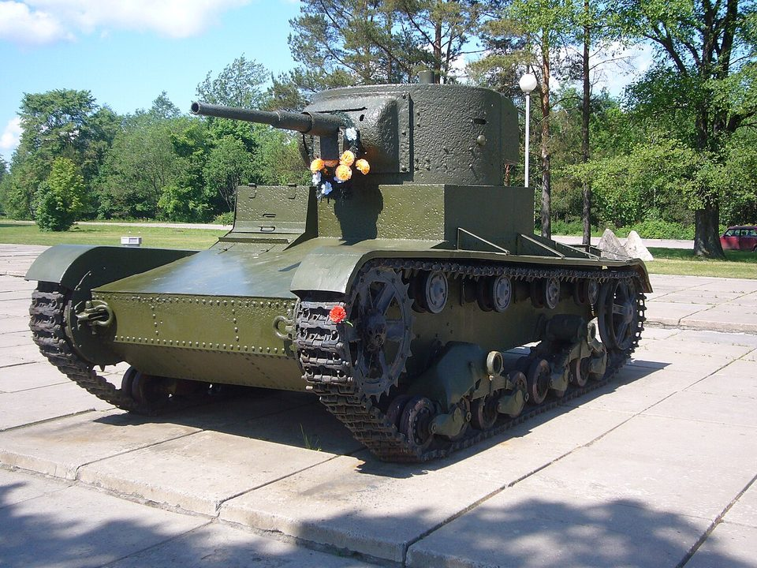
Unión Soviética · 1931T-26
Carro ligero
-
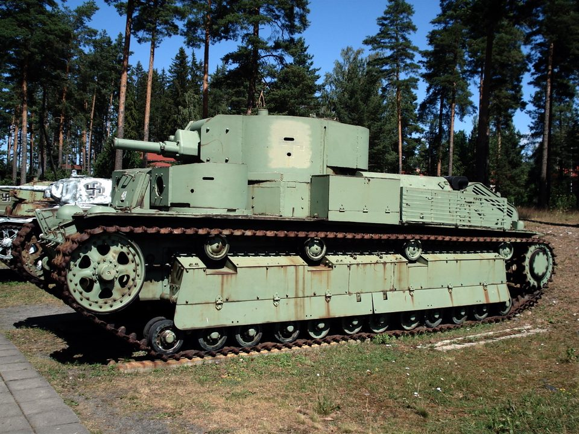
Unión Soviética · 1933T-28
Carro medio
-
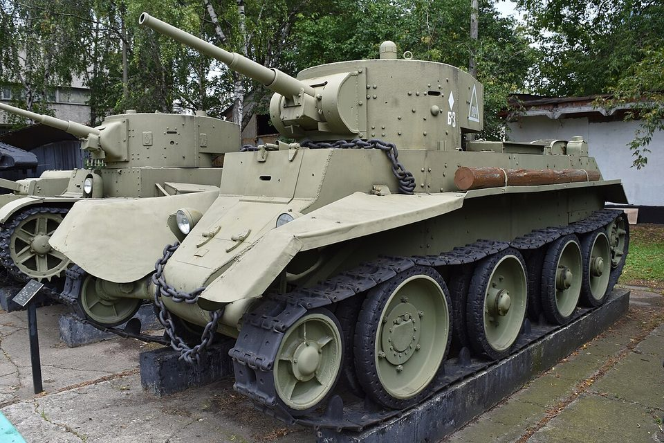
Unión Soviética · 1935BT-7
Carro rápido
-
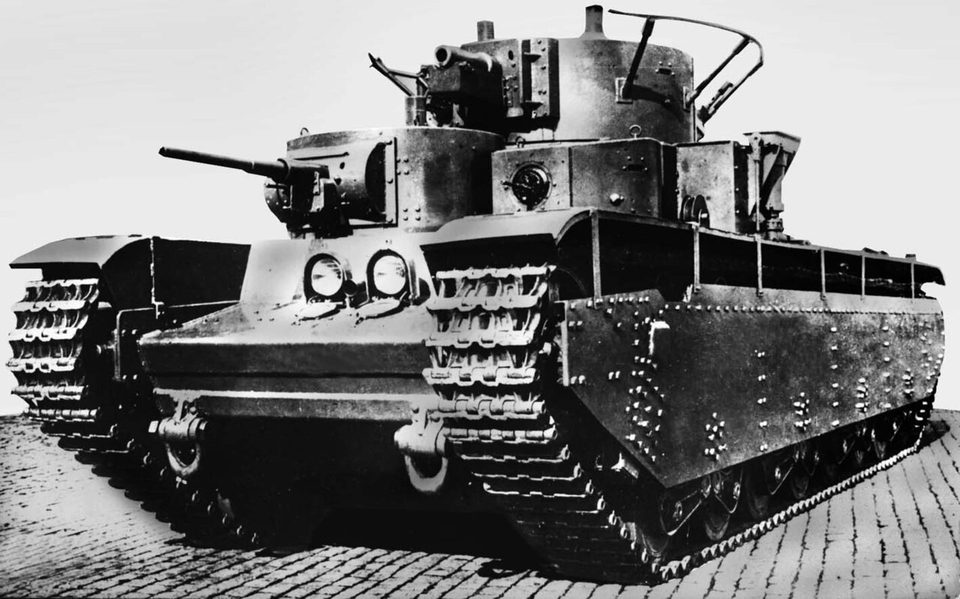
Unión Soviética · 1935T-35
Carro pesado
Segunda Guerra Mundial
1939–1945 · 8 fichas-
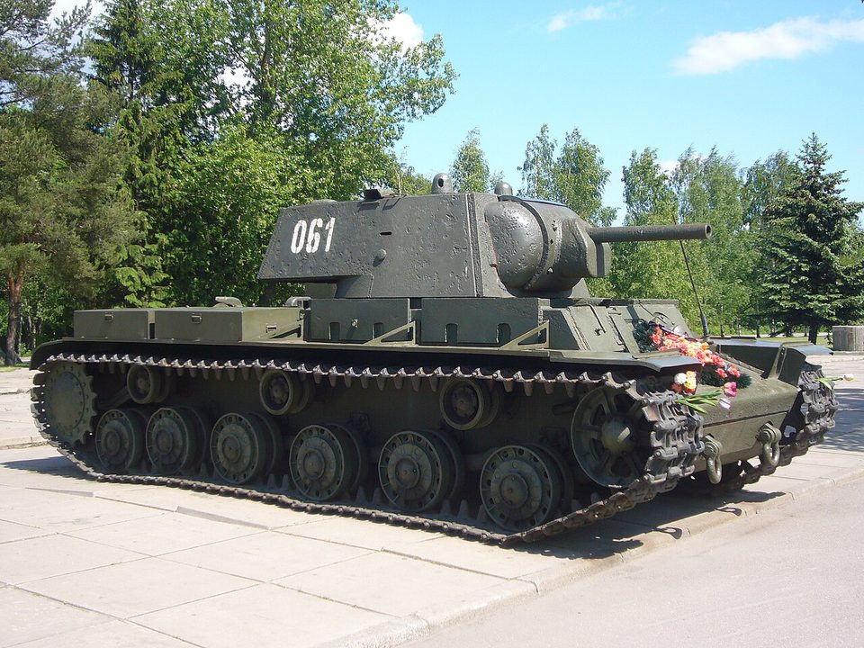
Unión Soviética · 1939KV-1
Carro pesado
-
 Unión Soviética · 1940
Unión Soviética · 1940T-34
Carro medio
-
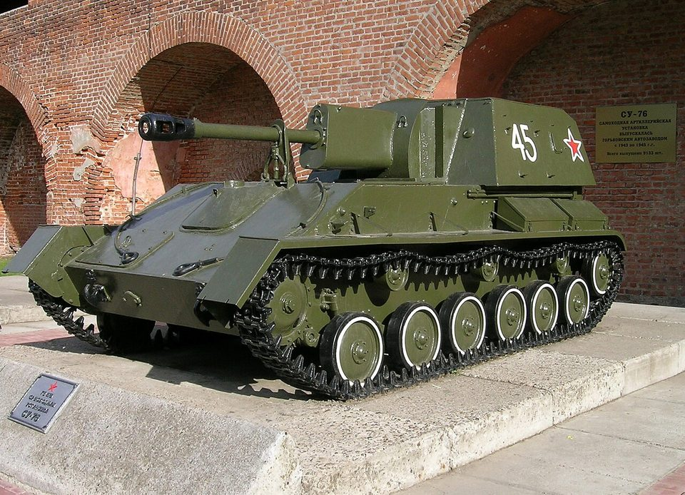
Unión Soviética · 1942SU-76
Cañón autopropulsado ligero
-
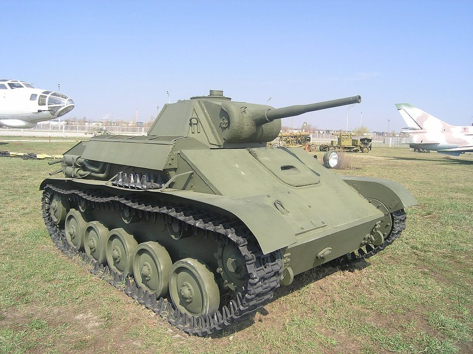
Unión Soviética · 1942T-70
Carro ligero
-
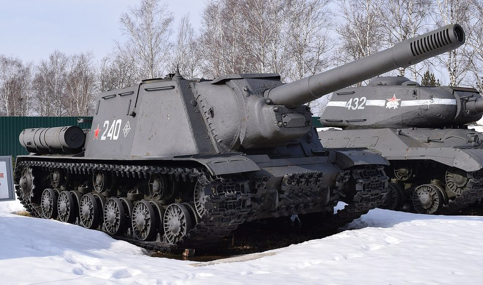
Unión Soviética · 1943ISU-152
Cañón de asalto pesado
-
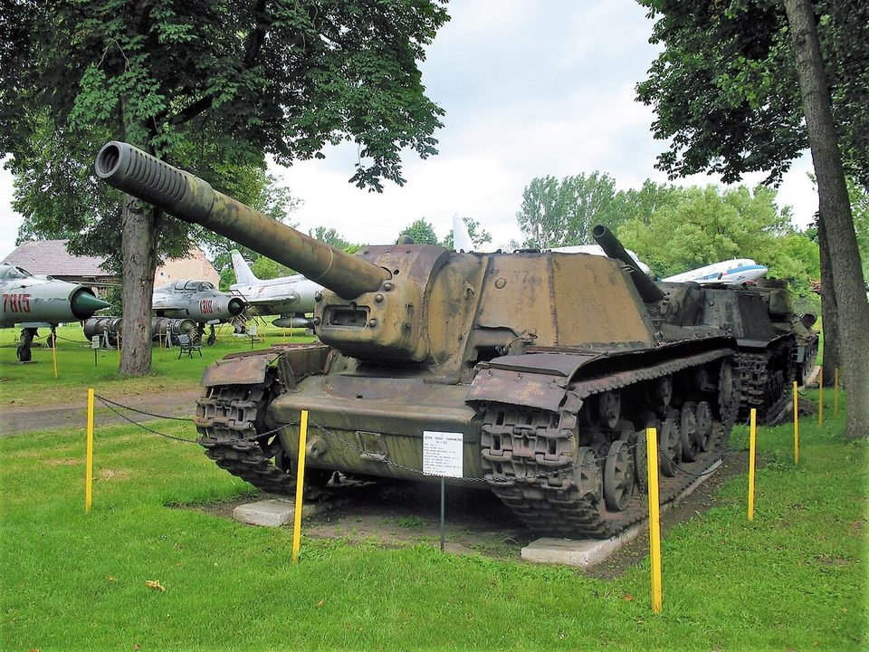
Unión Soviética · 1943SU-152
Cañón de asalto pesado
-
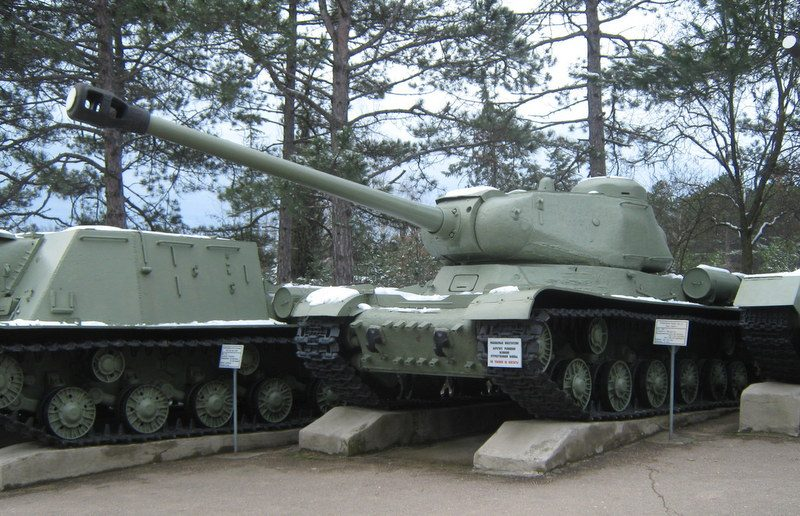
Unión Soviética · 1944IS-2
Carro pesado
-
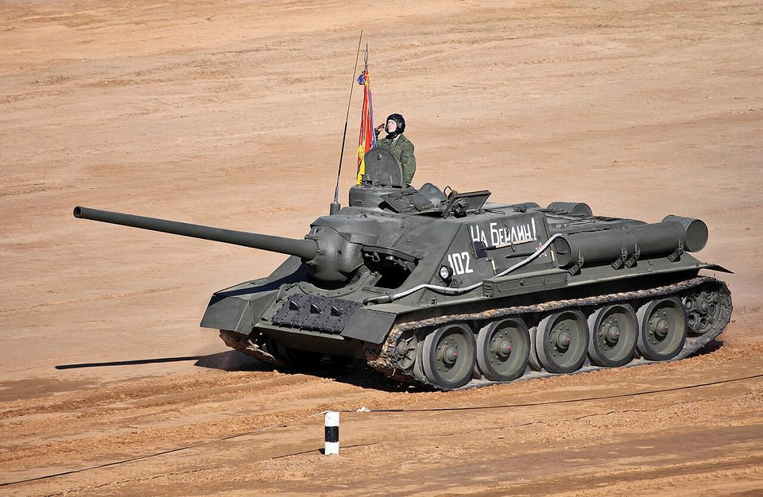
Unión Soviética · 1944SU-100
Cazacarros
Guerra Fría
1946–1991 · 10 fichas-
 Unión Soviética · 1945
Unión Soviética · 1945IS-3
Carro pesado
-
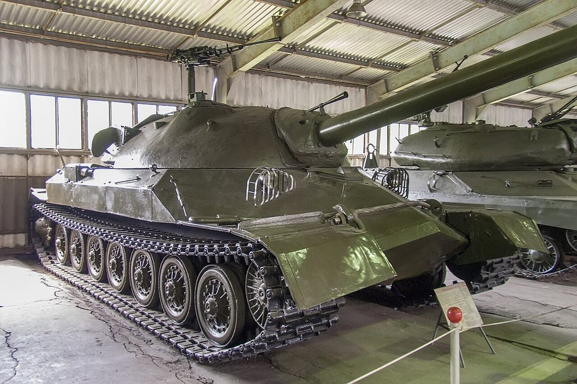
Unión Soviética · 1948IS-7
Prototipo de carro pesado
-
 Unión Soviética · 1948
Unión Soviética · 1948T-54 / T-55
Carro de combate principal
-
 Unión Soviética · 1951
Unión Soviética · 1951PT-76
Carro ligero anfibio
-
 Unión Soviética · 1954
Unión Soviética · 1954T-10
Carro pesado
-
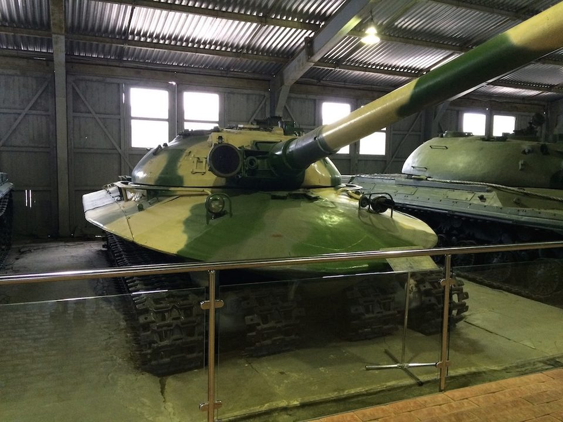
Unión Soviética · 1959Objeto 279
Prototipo de carro pesado
-
 Unión Soviética · 1961
Unión Soviética · 1961T-62
Carro de combate principal
-
 Unión Soviética · 1966
Unión Soviética · 1966T-64
Carro de combate principal
-
 Unión Soviética · 1973
Unión Soviética · 1973T-72
Carro de combate principal
-
 Unión Soviética · 1976
Unión Soviética · 1976T-80
Carro de combate principal